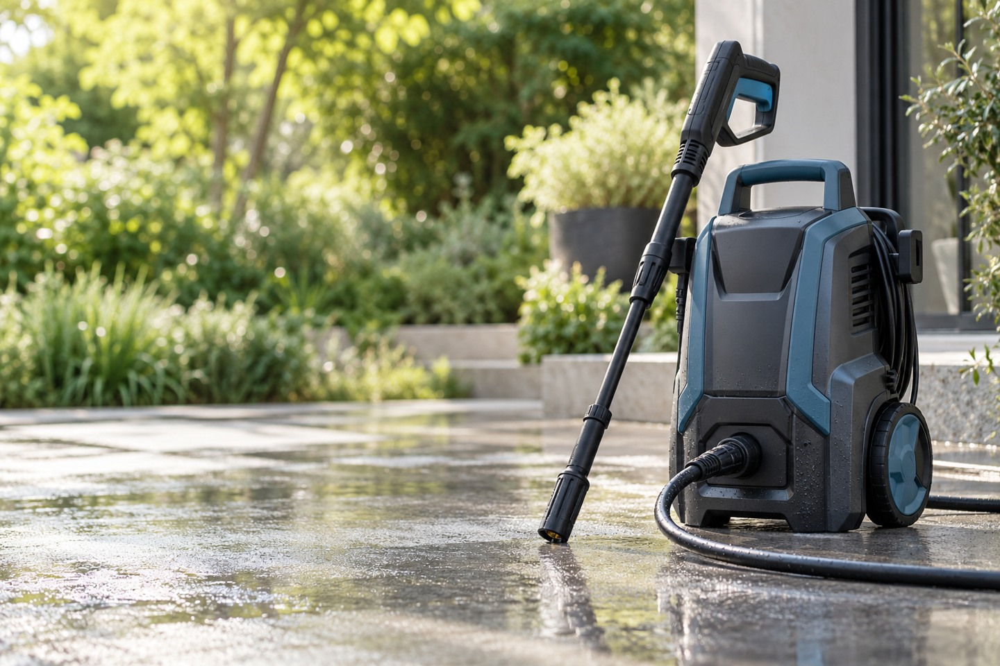

玄関・タイル
素材や目地によって使用条件が異なります。取扱説明書と施工材の注意事項を確認します。
非公式の提案用モック｜架空商品・AI画像・仮内容。実際の販売・計測・外部送信は未接続です。
PRESSURE WASHER / CONCEPT A
玄関まわり、外壁、庭の道具。使う場所と準備を確かめて、洗浄機を選ぶためのご案内。

WHERE TO USE
素材や目地によって使用条件が異なります。取扱説明書と施工材の注意事項を確認します。
対象物の耐水性と汚れの種類を確認。電装品や壊れやすい部品に直接噴射しません。
必要な接続・ホース・電源条件は正式な商品仕様で確認。付属品と別売品を区別して案内します。
CHECK BEFORE YOU CHOOSE
タイル・目地の状態と、対象素材の洗浄条件を確認してください。
商品適合を診断する機能ではありません。正式仕様・説明書の確認が必要です。PRODUCT INFORMATION
性能数値や価格を仮の実績として載せず、支給情報が入る位置を示しています。
| 型番・サイズ | 正式資料の支給後に掲載 |
|---|---|
| 圧力・流量・電源 | メーカーの確認済み仕様を掲載 |
| 付属品・保証 | 対象範囲と別売品を確認後掲載 |
| 販売価格 | 未設定。販売先の表示と同期 |
素材・状態・仕様によります。本ページだけで使用可否を判断せず、対象商品の説明書に従ってください。
できません。提案用デモです。ボタンは遷移設計の確認画面を開きます。